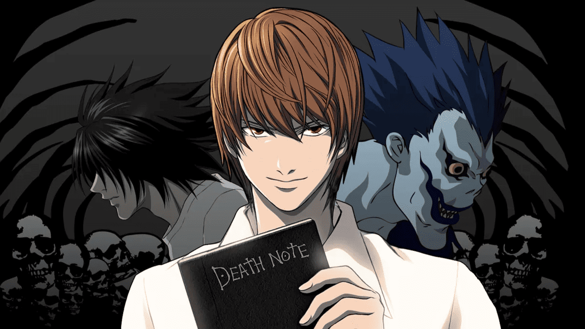

Death note, o Livro da morte

Death Note, é um anime que diz sobre um jovem colegial, que entediado com sua vida monótona, encontra um
caderno ou livro, que diz "Death Note", que traduzindo, significa livro da morte.
O livro da morte á capaz de matar qual quer pessoa com algumas condições, uma delas mais utilizadas durante o anime
é que o usuário do caderno tem que ter em mente a pessoa que pretende matar e precisa escrever o nome completo da pessoa, que em poucos
instantes, a pessoa irá ter um ataque cardiaco e irá morrer.
Na imagem estão presentes os seguintes elementos:
- Caderno "Death Note" (livro da morte)
- Light/Kami (personagem principal do anime)
- O Demonio dono do livro da morte
- L (Detetive que investiga quem esta matando as pessoas durante o anime)
Ordem Cronologica dos acontecimentos do primeiro episódio:
- Mostra o personagem principal entediado na sala de aula
- O mesmo encontra o caderno que caiu literalmente do céu
- Após ler um "Tutorial" na capa do caderno de como funciona, ele testa o caderno
- Após ver que o caderno realmente funciona, ele resolve matar todos os bandidos para tornar o mundo melhor
Clique aqui para ver o Anime na Crunchyroll